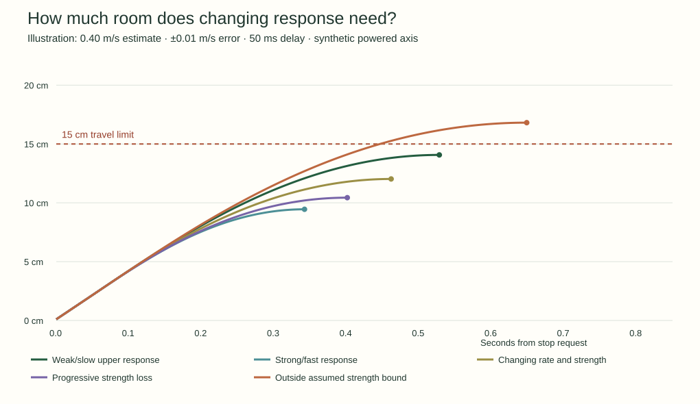
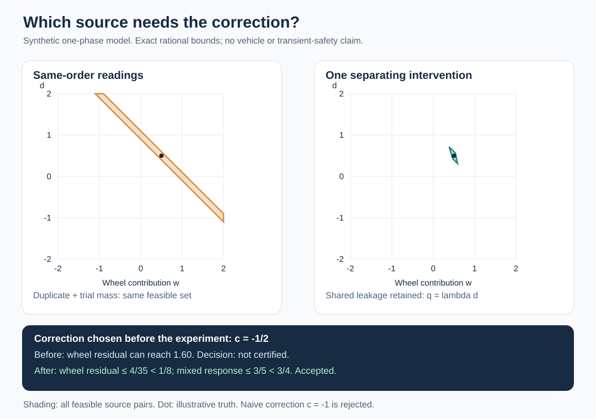

Controls research · 17 October 2026 · illustrative parameters, not measured hardware
How far before the first stop?
The conditions can change the response during a stop. A useful guarantee must cover that change, the delay before braking starts, and error in the starting measurements. We have now proved such a bound for a powered-axis model.
Made with Manim Community. The curves are numerical illustrations. The closing statement is the exact conditional theorem. Render details and scope.
What the model says
Position changes with velocity. Velocity changes with acceleration. Acceleration takes time to approach the effective braking target. Both that target and the response rate can change. The proof encloses all such motion within the declared bounds.
x: position v: velocity a: acceleration
r: response rate b: effective acceleration target
| Assumption | Illustrative value | Role |
|---|---|---|
| Starting measurement | Position 0 ± 1 mm; velocity 0.40 ± 0.01 m/s | Use the adverse ends of both intervals. The theorem permits the larger range 0 ≤ true velocity ≤ 0.41 m/s. |
| Delay before engagement | At most 50 ms; acceleration ≤ 0.1 m/s² | Include the travel and speed gained while braking is pending. |
| Response rate | 8–12 per second; continuous | The actuator can respond faster or slower during the maneuver. |
| Effective braking target | At most −1.2 m/s² before first zero | It must remain sufficiently negative. Numerical examples also use a lower bound of −2 m/s²; the one-sided theorem does not need that lower bound. |
| Actual motion | Continuous state; stated differential equations where required | The guarantee applies to every such trajectory. An explicit example proves that the assumptions can hold. |
This is a bound on position relative to the measured reference. It is not exactly 15 cm of travel from the unknown true initial position. The theorem requires the delay equations on the delay interval and a continuous, bounded rate on the full horizon. The braking equations and negative target are required only before the first true zero.
Does the tighter calculation change a decision?
Yes, in this synthetic example. A simple conservative bound with the same uncertainty needs about 16.06 cm at a 0.40 m/s estimate. The sharper envelope has a numerical peak of 14.07 cm. Lean separately proves the rounded 15 cm limit for the entire interval, including the delay.
| Estimated speed | Sharper envelope: numerical peak | Simple bound: same assumptions | Decision at 15 cm |
|---|---|---|---|
| 0.30 m/s | 9.22 cm | 11.16 cm | Both numerical bounds pass |
| 0.40 m/s | 14.07 cm | 16.06 cm | Sharper bound passes; exact Lean certificate covers this case |
| 0.50 m/s | 19.78 cm | 21.79 cm | An admitted response crosses the limit |

The 0.50 m/s rejection is more than a loose bound. Lean checks a concrete admitted trajectory that crosses 15 cm while still moving forward. That proof starts at the corresponding engagement state; its delay prefix has not been formally attached in that module.
The numerical maximum speed estimates are 0.41734 m/s for the sharper envelope and 0.37975 m/s for the simple bound. Those thresholds are not Lean certificates. A fixed nominal model admits faster motion because it omits part of the uncertainty; that is not a valid comparison of safety for the richer plant. Numerical results · Reproducible experiment.
What changed in the proof?
The first version required continued braking through the whole analysis horizon. The reviewer noted that a real controller may switch to holding at zero velocity. The final theorem removes the braking equation and negative-target requirement at the first zero and afterward. It still proves that the zero occurs on time and that the preceding motion respects the limit.
The final event theorem builds on a general response comparison, exact delay integration and an earliest-zero argument. The six new modules contain 23 public named theorems. Fresh source builds, standard-axiom audits and individual kernel replays are recorded in verification.json. The checker also rejects a deliberately false 10 cm certificate. Pinned dependencies are reused.
Your shoe example identifies the next boundary
A shoe can lose grip, slide, regain grip, then lose it again. Conditions and the current state determine the response. The present model permits changing response within bounds. It does not model contact loss, impact, a friction law or recovery of grip. To cover those events, we need separate contact modes, limits on each mode and rules for transitions.
The next useful theorem should account for the time needed to detect a change and reach a mode that can maintain safety. A one-instant recovery is not enough. We must prove what happens while the system changes mode and afterward.
The wheel and drivetrain example changed a second decision
In a small source-attribution model, one observed signal is the sum of wheel and drivetrain contributions. Repeating the same reading does not identify either source. A known trial change also leaves them unresolved in this chosen data set. A new condition with a bounded drivetrain contribution narrows the possible wheel contribution enough to accept a preselected correction.

After that measurement, correction −0.5 keeps the wheel residual at most 4/35 and the total residual at most 3/5 under the stated model. Cancelling the whole nominal reading with correction −1 fails the wheel requirement. An independent exact-rational Python checker verifies 56 bound certificates, one infeasibility certificate and eight action decisions. It rejects all 14 corrupted examples.
This is a synthetic signed, single-phase amplitude model. The transfer assumptions are supplied, not measured on a vehicle. It is not a Lean proof or a full wheel-balance method. We have not proved an interface from source attribution to the stopping model. Model, exact results and limits · Independent checker · Independent challenge.
What would make this worth publishing?
We have a checked proof and a case where sharper reasoning changes an accepted decision. We have not established a new control method. The next useful work is to connect the bounds to repeatable measurements, include sampled stop detection and holding, and compare against a public robust-stopping or verified-reachability method under the same assumptions.
Temperature, load, wear and contact changes are reasons to measure those bounds. They are not yet inputs to a validated physical law here. PL d/e requires a wider machine safety case. The existing paper draft has not been rewritten around this new result.
Read the wider literature and application review. A separate agent also completed the requested Weinstein-to-Lean feasibility assessment, with one checked local algebra calculation.